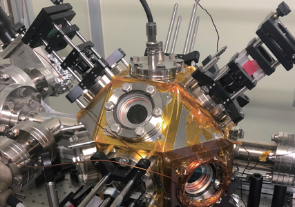

연구성과 10선
연구성과 10선
KAIST RESEARCH ACHIEVEMENTS
리드버그원자 양자시뮬레이터 개발
물리학과 안재욱, 심흥선
요약
양자컴퓨팅이 중요한 미래기술의 하나로 대두되고 있다. 최근 KAIST의 물리학 연구진들이 초기 단계의 양자컴퓨팅에 해당하는 리드버그 원자를 이용한 25큐빗 양자 시뮬레이터를 실험-이론의 공동연구를 통하여 개발하였다. 이 양자시뮬레이터는 양자-아이징모델로 잘 알려진 중요한 물리문제를 계산하는 데 활용되어, 양자얽힘 다체계의 열화과정을 실험적으로 관찰하는데 성공하였다. 이 시스템은 프로그램이 가능한 범용 양자컴퓨터 수준에 아직 도달하지 못하였으나, 제한된 물리 문제를 계산하는 데에는 활용할 수 있음을 보여주었다.
연구배경
최근 양자컴퓨터에 대한 관심이 높아지고 있다. 양자컴퓨터는 중첩, 얽힘, 비국소성 등의 양자역학적 현상을 정보계산에 직접적으로 활용하는 기계장치이며, 디지털컴퓨터가 원리적으로 감당할 수 없는 계산을 수행할 것으로 예상되어, 이를 개발하기 위한 연구경쟁이 전세계적으로 진행되고 있다. 양자컴퓨터의 핵심기술은 양자역학적 정보단위인 양자비트(큐빗)를 저장하는 입자들 간의 상호작용을 외부잡음으로부터 철저히 분리하면서 프로그램하는 것이며, 현재까지 이러한 기술을 구현하는 물리계로는 이온덫과 초전도체 회로가 알려져 있다. 양자컴퓨터가 50개 정도의 큐빗 입자를 임의로 프로그램 할 수 있으면 디지털 컴퓨터의 성능을 앞서게 되지만, 최근의 빠른 발전에도 불구하고, 현재의 양자컴퓨터는 최대 20개 정도의 큐빗만을 구동하고 있다.
KAIST 연구진은 2016년에 광학집게덫을 이용하여 새로운 중성원자 배치기술을 개발하였다. 그리고 2018년에는 이를 이용하여 리드버그원자 양자시뮬레이터 (양자컴퓨터 전단계의 기계장치로서 프로그램 능력이 제한적임)을 개발하였다. 이 장치는 고진공에서 극저온으로 냉각된 중성원자를 임의의 마이크로미터 크기의 구조체로 배열한 후에, 리드버그원자(마이크로미터 크기의 원자상태)를 형성하여, 양자얽힘 원자-다체계를 달성하는 실험장치이다. 레이저 원자냉각장치, 광학집게열의 생성 및 이동장치, 단일원자 현미경과 초고성능 분석계산장치로 구성되어 있다. 현재까지 약 40큐빗 규모의 양자얽힘 원자열을 구성할 수 있으며, 약 25큐빗까지 동적상태를 분석할 수 있다. 프로그램 능력은 아직 제한적이지만, 일부 중요한 물리문제의 해밀토니안을 구현할 수 있다. 개발한 양자 시뮬레이터를 활용하여 첫번째로 얻은 실험결과는 다음과 같다. 양자-아이징 헤밀토니안을 구동하여 양자 다체계 (quantum many-body system)가 평형상태(steady state)로 진행할 때 그 근간에 놓인 동역학이 무엇인지를 연구하였다. 루비듐 단원자(single atom)가 스핀-1/2 입자의 특성을 모방할 수 있음에 착안하였다.
 리드버그원자 양자시뮬레이터
원자들을 공간상에 지그재그로 배치하여 각도를 조절하면서, 원자간의 상호작용이 가장 가까운 원자끼리 또는 다음 가까운 거리까지 미치는 양자 아이징모델 (또는transverse-field Ising model)를 구현하였고, 각 원자의 스핀 상태의 시간 변화(time evolution)을 실험 측정을 통해 실시간 추 적하였다. 힐버트 공간 전체의 확률분포를 분석한 결과, 스핀계의 동역학이 최초의 결맞음 진동(coherent oscillation)에서 이론적으로 예측된 평형상태로 수렴함을 보였고, 수렴하는 방식이 열화과정(thermalization)의 미세균형(detailed balance) 조건을 만족함을 확인할 수 있었다. 이는 양자스핀계의 열화가 분산(diffusion)에 기반한 통계역학적 열화방식과 대응되는 경우가 존재함 을 실험적으로 보인 것에 해당한다.
기대효과
양자시뮬레이터는 양자컴퓨터의 전단계 연구용 기계장치로서, 관련 연구와 양자컴퓨터 개발을 위한 기술수준을 발전시키는 중요한 역할을 한다. 현재 리드버그원자 양자시뮬레이터는 KAIST, 하버드대, 프랑스 광학연구소가 보유하여 연구하고 있으며, 구동정확도 (gate operation fidelity)가 다른 양자컴퓨터 경쟁모델 (이온덫과 초전도체회로)에 비해 부족하지만, 큐빗 개수를 확장할 수 있는 장점이 있다. 50개 큐빗 규모의 양자얽힘을 구현할 수 있으며, 최근 물리학에 중요하게 대두되고 있는 다양한 양자 다체계 문제에 활용될 것으로 기대된다.
연구성과
[논문 1] Hyosub Kim, Yeje Park, Kyungtae Kim, H.-S. Sim, and Jaewook Ahn, “Detailed balance of thermalization dynamics in Rydberg atom quantum simulators,” Physical Review Letters 120, 180502 (2018). 이 논문은 Physical Review Letters 저널에서 주목할 논문(Editors suggestion)으로 선정
[논문 2] Woojun Lee, Hyosub Kim, and Jaewook Ahn, “Defect-free atomic array formation using the Hungarian matching algorithm,” Physical Review A 95, 053424 (2017).
[[특허] Jaewook Ahn, Hyosub Kim, Woojun Lee, “Dynamic holographic single atom tweezers and tweezing method using thereof,” Korea Patent 1017834040000 (2017-09-25).